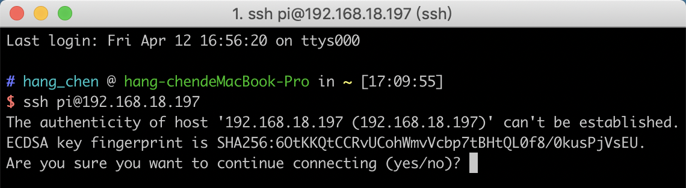

Richten Sie Ihren Raspberry Pi ein¶
Wenn Sie einen Bildschirm haben¶
Wenn Sie einen Bildschirm haben, können Sie den Raspberry Pi problemlos bedienen.
Erforderliche Komponenten
Jeglicher Raspberry -Pi |
1 * Netzteil |
1 * Micro SD Karte |
1 * Bildschirm Netzteil |
1 * HDMI Kabel |
1 * Bildschirm |
1 * Maus |
1 * Tastatur |
Legen Sie die mit Raspberry Pi OS eingerichtete SD-Karte in den Micro-SD-Kartensteckplatz an der Unterseite Ihres Raspberry Pi ein.
Stecken Sie die Maus und Tastatur ein.
Schließen Sie den Bildschirm an den HDMI-Anschluss von Raspberry Pi an und stellen Sie sicher, dass Ihr Bildschirm an eine Wand Steckdose angeschlossen und eingeschaltet ist.
Bemerkung
If you use a Raspberry Pi 4, you need to connect the screen to the HDMI0 (nearest the power in port).
Verwenden Sie das Netzteil und versorgen den Raspberry Pi mit Strom. Nach einigen Sekunden wird der Raspberry Pi OS-Bildschirm angezeigt.

Wenn Sie keinen Bildschirm haben¶
Wenn Sie keine Anzeige haben, können Sie sich aus der Ferne beim Raspberry Pi anmelden. Zuvor müssen Sie jedoch die IP-Addresse des Raspberry Pi abrufen.
Die IP-Adresse bekommen¶
Nachdem der Raspberry Pi mit WIFI verbunden ist, müssen wir die IP-Adresse davon erhalten. Es gibt viele Möglichkeiten, die IP-Adresse zu ermitteln, und zwei davon sind wie folgt aufgeführt.
1. Überprüfung über den Router
Wenn Sie berechtigt sind, sich beim Router anzumelden (z. B. in einem Heimnetzwerk), können Sie die Raspberry Pi zugewiesenen Adressen auf der Administrationsoberfläche des Routers überprüfen.
Der Default Hostname des Raspberry Pi-Betriebssystems ist raspberrypi, und bitte Sie ihn finden. (Wenn Sie das ArchLinuxARM-System verwenden, suchen Sie bitte alarmpi.)
2. Scannen von Netzwerksegmenten
Sie können auch Netzwerk Scannen verwenden, um die IP-Adresse von Raspberry Pi zu ermitteln. Sie können die Software anwenden, den erweiterten IP-Scanner usw.
Scannen Sie den eingestellten IP-Bereich, und alle angeschlossenen Gerätsnamen wird angezeigt. Ebenso, der Default Hostname des Raspberry Pi-Betriebssystems ist raspberrypi, wenn Sie ihn nicht geändert haben.
Verwenden Sie die SSH-Fernbedienung¶
Wir können die Bash Shell von Raspberry Pi öffnen, mit Anwendung von SSH. Bash ist die Default Standard Shell von Linux. Die Shell selbst ist ein in C geschriebenes Programm und stellt die Brücke zwischen den Kunden und Unix / Linux dar. Darüber hinaus kann es helfen, den größten Teil der erforderlichen Arbeit zu erledigen.
Für Linux- oder Mac OS X-Benutzer
Schritt 1
Gehen Sie zu Anwendungen-> Dienstprogramme, suchen Sie das Terminal und öffnen Sie es.

Schritt 2
Geben Sie ssh pi @ ip_address ein. „Pi“ ist Ihr Benutzername und „ip_address“ ist Ihre IP-Adresse. Z. B. :
ssh pi@192.168.18.197
Schritt 3
Geben Sie „Ja“ ein.
Schritt 4
Geben Sie den Password ein und das Default Passwort lautet raspberry.

Schritt 5
Wir verbinden jetzt den Raspberry Pi und sind bereit, mit dem nächsten Schritt fortzufahren.

Bemerkung
Wenn Sie das Kennwort eingeben, werden die Zeichen im Fenster nicht entsprechend angezeigt, was normal ist. Sie brauchen lediglich das richtige Passwort einzugeben.
Für Windows-Benutzer
Wenn Sie ein Windows-Benutzer sind, können Sie SSH mit der Anwendung einiger Software verwenden. Hier empfehlen wir PuTTY.
Schritt 1
Laden Sie PuTTY herunter.
Schritt 2
Öffnen Sie PuTTY und klicken Sie auf Sitzung in der linken baumähnlichen Struktur. Geben Sie die IP-Adresse des RPi in das Textfeld unter Hostname (oder IP-Adresse) und 22 unter Port ein (Default ist 22).

Schritt 3
Klicken Sie auf Öffnen. Beachten Sie bitte, beim ersten Anmelden am Raspberry Pi mit der IP-Adresse eine Sicherheitserinnerung wird anzeigen. Klicken Sie einfach auf Ja.
Schritt 4
Wenn PuTTY-Fenster die Meldung „**Anmelden als:“** anzeigt, geben Sie „**pi“(den Benutzernamen des RPis) und das Passwort „raspberry“ (die Default Einstellung, wenn Sie diese nicht geändert haben) ein.

Schritt 5
Hier wird der Raspberry Pi angeschlossen und es ist Zeit, die nächsten Schritte durchzuführen.
Hinweis: Wenn Sie das Kennwort eingeben, werden die Zeichen im Fenster nicht entsprechend angezeigt, was normal ist. Sie brauchen lediglich das richtige Passwort einzugeben.
Hinweis: Wenn Sie mit der Verwendung des Befehlsfensters zur Raspberry Pi Steuerung nicht zufrieden sind, können Sie auch die Fernbedingungen verwenden, mit der wir die Dateien im Raspberry Pi einfach verwalten können.
Einzelheiten dazu finden Sie unter ref:Fern-Bildschirm.